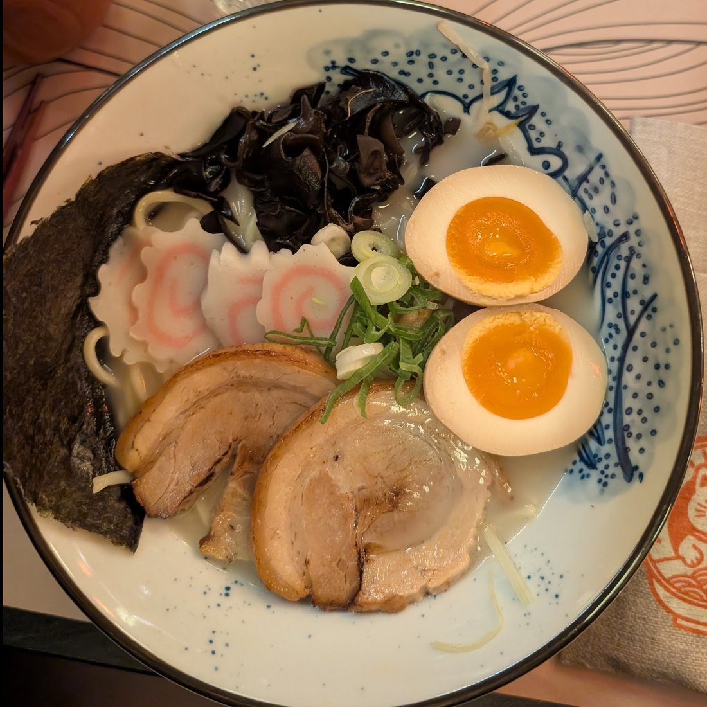
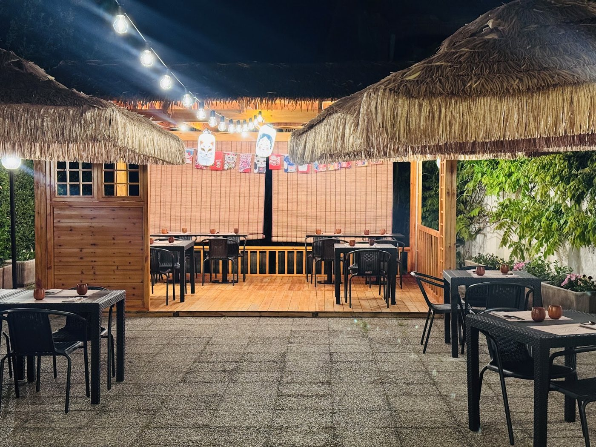
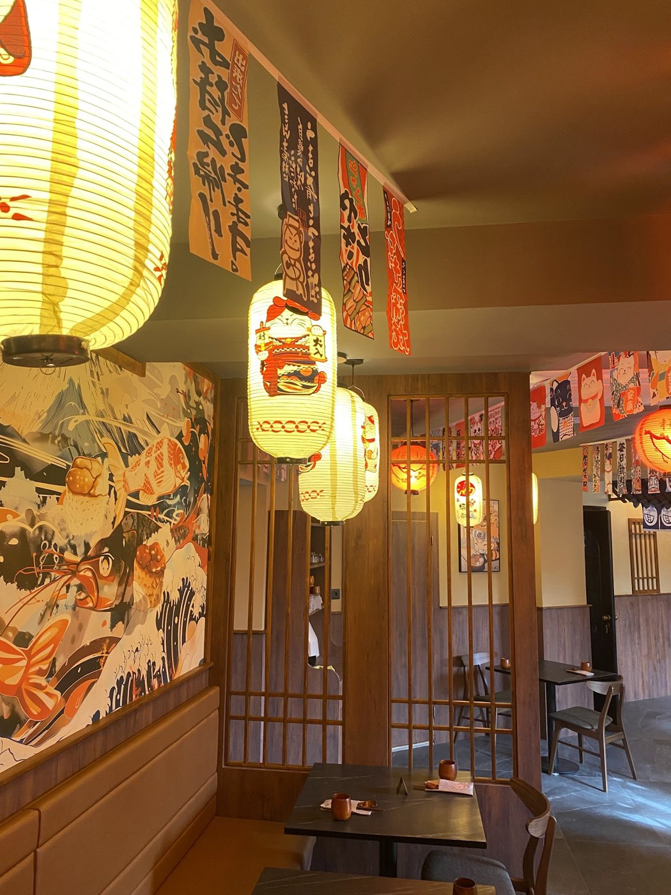
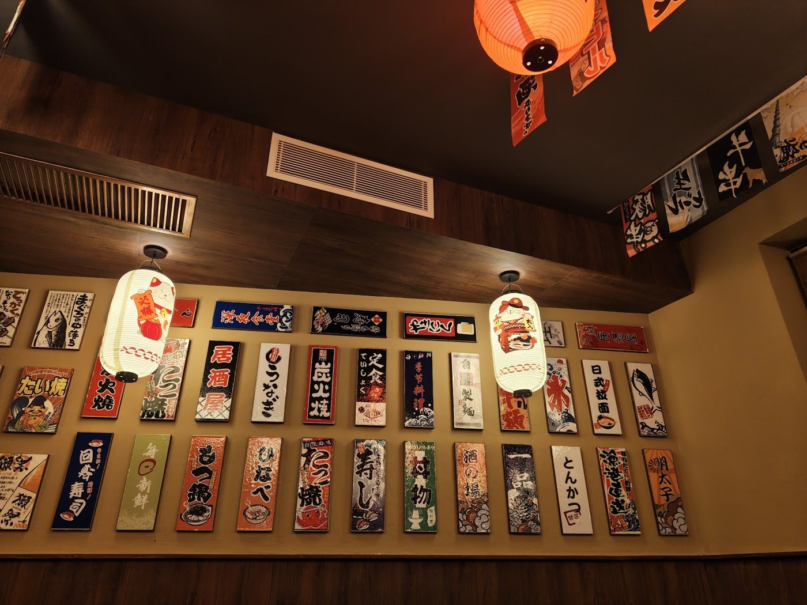

Via Roma 5b · Chieri
Una ciotola fumante, in centro a Chieri.
Ramen con uovo marinato, chashu e alga nori. Poi gyoza, involtini, edamame e un gelato al matcha. A pranzo e a cena, dentro tra le lanterne o fuori nel cortile.

Il gioco della ciotola
Componi la tua ciotola.
Il brodo è pronto e i noodles sono già dentro. Aggiungi quello che ti piace: sono gli ingredienti che trovi nei nostri ramen.
È un gioco: la composizione vera dei ramen la trovi nel menù al tavolo.



Il cortile
Dentro le lanterne, fuori la paglia.
Dentro, la sala con le lanterne rosse e le tavolette alle pareti. Fuori, un cortile riparato sotto gli ombrelloni di paglia, per le sere d'estate e i pranzi di sole. «Ambiente stupendo», scrivono nelle recensioni.
Orari